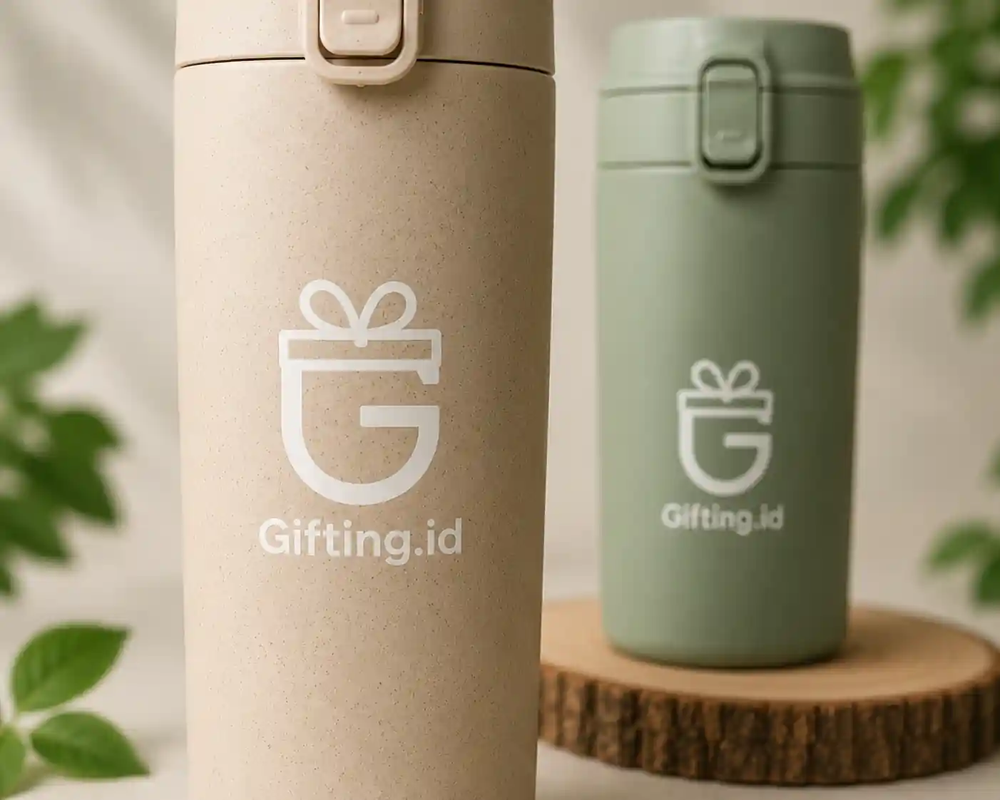

1. Pendahuluan
Di era modern ini, kesadaran perusahaan terhadap isu keberlanjutan (sustainability) semakin tinggi. Pemilihan material alami pada seminar kit atau suvenir kantor tidak hanya terlihat elegan dan eksklusif, tapi juga secara tidak langsung memperkuat nilai keberlanjutan merek Anda di mata klien maupun karyawan.
Sebuah suvenir bukan lagi sekadar barang gratis yang dibagikan, melainkan representasi dari identitas dan tanggung jawab sosial sebuah entitas bisnis. Oleh karena itu, peralihan dari material plastik ke material organik seperti bambu menjadi tren yang terus meningkat di berbagai industri multinasional.
2. Mengapa Memilih Material Bambu?
Bambu adalah salah satu sumber daya alam yang paling cepat pertumbuhannya, menjadikannya alternatif yang sangat ramah lingkungan dibandingkan plastik atau bahkan kayu keras. Tanaman bambu dapat dipanen dalam waktu yang jauh lebih singkat tanpa perlu menanam ulang karena sistem akarnya yang tangguh.
Dari segi estetika, tekstur dan serat alami bambu memberikan kesan earthy dan premium yang unik, di mana tidak ada dua tumbler yang memiliki pola serat yang sama persis. Hal ini memberikan sentuhan personal dan eksklusifitas bagi setiap penerimanya. Material ini juga dikenal memiliki durabilitas yang baik, tahan terhadap goresan halus, dan ringan saat dibawa bermobilitas.
3. Detail Ukiran (Engraving) Logo yang Elegan
Salah satu keunggulan utama suvenir berbahan bambu atau kayu adalah kemampuannya untuk dipersonalisasi menggunakan teknologi laser engraving. Teknik ini menghasilkan logo perusahaan yang permanen, presisi, dan menyatu secara alami dengan material dasarnya.
Berbeda dengan sablon warna yang bisa mengelupas atau memudar seiring waktu, ukiran laser memberikan hasil akhir yang timbul dan bertekstur. Warna cokelat gelap hasil bakaran laser pada permukaan bambu sangat serasi dengan warna naturalnya. Hasilnya adalah estetika branding yang subtle, elegan, dan jauh dari kesan suvenir promosi massal yang murah.

4. Ide Kombinasi Paket Seminar Kit
Untuk memaksimalkan Corporate Gifting Experience, tumbler bambu sangat cocok dikombinasikan dengan beberapa item ramah lingkungan lainnya dalam satu kotak kemasan premium. Berikut adalah beberapa inspirasinya:
- The Organic Executive: Tumbler bambu, buku catatan bersampul bambu atau kulit sintetis daur ulang, dan pulpen kayu eksklusif.
- The Daily Roaster: Tumbler bambu dipadukan dengan set kopi artisan lokal (drip bag coffee) dan coaster kayu.
- The Tech-Eco Blend: Tumbler bambu dikombinasikan dengan wireless charger beraksen kayu atau flashdisk bambu.
5. Cara Merawat Tumbler Bambu
Meskipun bagian dalam tumbler biasanya terbuat dari stainless steel SUS 304 yang aman dan tahan karat (food grade), lapisan luar bambu memerlukan sedikit perhatian ekstra agar teksturnya tetap indah:
- Cuci menggunakan tangan (hand-wash) dengan spons lembut. Hindari penggunaan mesin pencuci piring (dishwasher).
- Jangan merendam tumbler ke dalam air dalam waktu yang lama untuk mencegah bambu menyerap air dan memuai.
- Keringkan segera dengan lap bersih atau tisu setelah dicuci.
6. Kesimpulan
Berinvestasi pada suvenir korporat yang ramah lingkungan seperti tumbler bambu adalah langkah cerdas dan strategis. Selain memberikan barang fungsional yang pasti terpakai untuk menikmati kopi atau teh di meja kerja, perusahaan Anda juga berkontribusi pada kampanye global pengurangan limbah plastik sekali pakai.
Sebuah tumbler bambu bukan hanya wadah minuman, melainkan pesan nyata bahwa perusahaan Anda peduli terhadap bumi, sekaligus menghargai klien dan karyawan dengan produk bernilai tinggi.